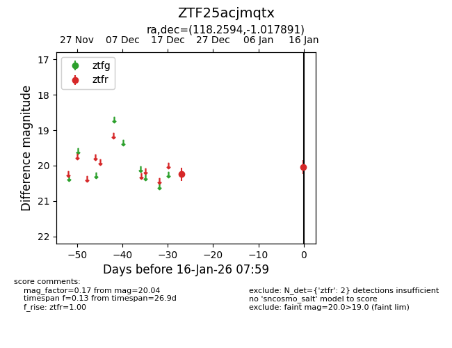
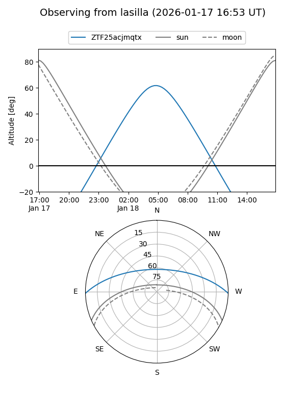
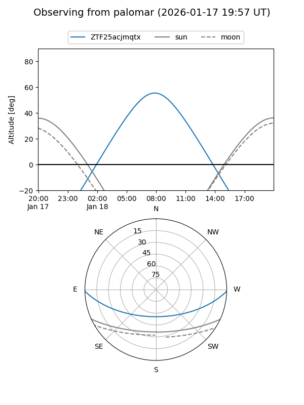

ZTF25acjmqtx
Target ZTF25acjmqtx at 2026-01-18 08:00
Aliases and brokers:
FINK: link
Lasair: link
ALeRCE: link
alt names
ZTF25acjmqtx (ztf,fink_ztf)
Coordinates:
equatorial (ra, dec) = 118.2594,-1.01789
equatorial (HMS+DMS) = 07:53:02.25,-01:01:04.41
galactic (l, b) = (221.0139,+13.19129)
Flags:
Photometry:
last ztfr=20.04
2 ztfr detections
Lightcurve

Visibility


Additional plots